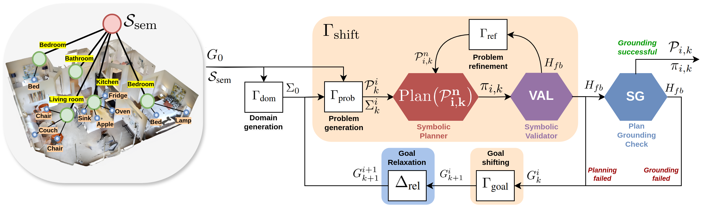

Methodology

Our formalism is mainly represented by two operators, the Γshift
and Δrel. Γshift represents the situational shifting, namely the operator that adapts the
agent's understanding of the operating environment to the core and the planning goal. Δrel represents
the complexity relaxation operators that is able to produce a more general or comprehensive formulation
of the goal. Suppose we have an agent which is able to explore the environment
and map every object he found to the corresponding location, effectively creating a 3D Scene Graph of
the environment. The 3D Scene Graph and the natural language description of the task are given into the architecture as our input.
The PDDL problem file is generated by the LLM, while the domain file is either given or generated to. The plan obtained at
the current time step is used to attempt grounding the scene. If this step fails, the relaxation mechanism
takes place and new PDDL files are generated for the next iteration. In this way, the architecture is
able to find the optimal subset of objects needed to achieve the task. Thanks to this bidimensional mechanism,
the architecture is able to gradually relax the problem until the least relaxed solution is found.
Effectively, what we found is the minimal traverse cost path inside our relaxation graph.